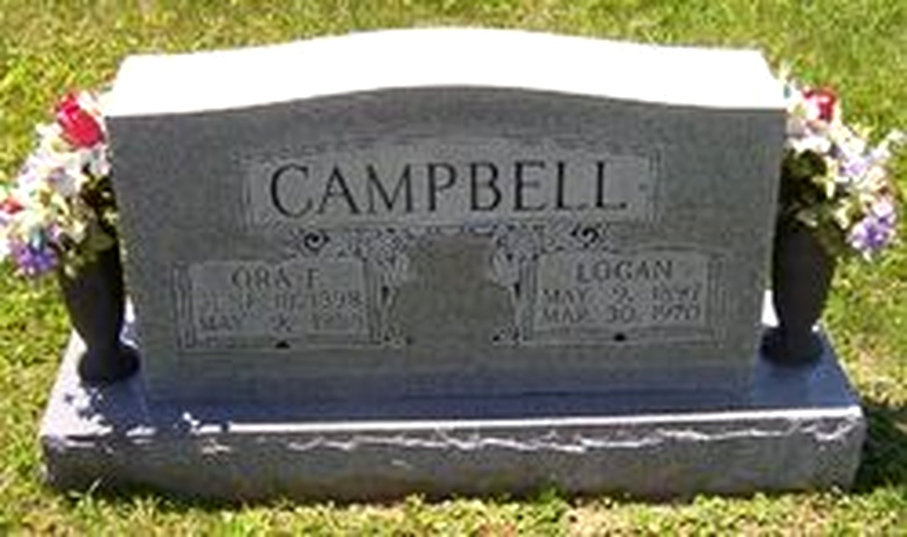
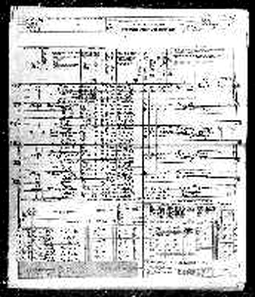
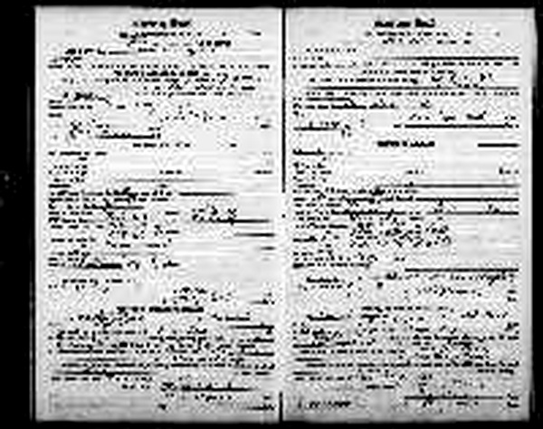
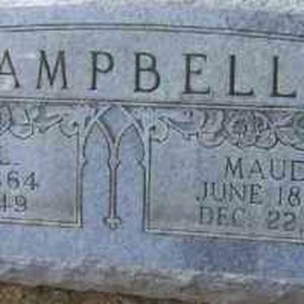

Logan Ira Campbell
9 May 1897 – 30 March 1970
Quick Facts
Immediate Family
Parents
- James Logan Campbell (1864–1949)
- Maude Allen Combs (1873–1958)
Spouses
Children
- Nelma Campbell (1920–unknown)
- James Otis Campbell (1920–1976)
- Logan Ray Campbell (1927–2017)
- Robert Lee Campbell (1931–1954)
- Edward Thomas Campbell (1932–1995)
- Ernest Franklin Campbell (1935–1994)
- Samuel Eugene Campbell (1937–1998)
- Virginia Elece Campbell (1942–2011)
Siblings
- Iva M. Campbell (1892–1958)
- Della Campbell (1893–1941)
- Franklin Filmore Campbell (1899–1920)
- Mary Etta Campbell (1902–1957)
- Nanie Bet Campbell (1905–1936)
- Edith Carrell Campbell (1908–1993)
- Nora Lizabeth Campbell (1911–2005)
- Joseph Campbell (1915–1915)
On Family Tree Sites
Couple Folder
Open Logan Ira Campbell × Ora Foster Campbell couple folder
· Logan Ira Campbell personal folder for records, photos, notes and stories.
Life Timeline
9 May 1897 · Birth (compiled profile) · age 0
FamilySearch gives his birth in Liberty, Casey County, Kentucky. The shared grave-marker image appears to read 26 May 1897; the day discrepancy remains unresolved.
22 September 1918 · Marriage · age 21
Married Ora Foster in Liberty, Casey County, according to the FamilySearch compiled profiles. The original 1918 marriage entry has not been inspected in this pass.
1935 · Dunnville household · about age 37–38
FamilySearch places the household in Magisterial District 6, Dunnville, Casey County, Kentucky.
2 February 1937 · Son Samuel born · age 39
Samuel Eugene Campbell was born in Casey County; the Kentucky birth index names Ora Foster as his mother.
1940 · Census household · about age 42–43
The census index lists Logan, Ora, and son Samuel in Dunnville, Casey County. Index entry only.
1950 · Census household · about age 52–53
The census index lists Logan, Ora, and Samuel in Dunnville; the index renders Ora’s name as “Ara.” Index entry only.
1 December 1956 · Samuel’s marriage · age 59
Samuel married Janice Elaine Woodrum. The marriage register names Logan Campbell and Ora Campbell as his parents; the existing source note reports direct inspection of the original image.
30 March 1970 · Death (compiled profile) · age 72
FamilySearch gives his death in Liberty, Casey County, and burial at Salem United Methodist Church Cemetery. The marker image appears to read 30 May 1970, conflicting with the compiled profile’s 30 March date; this remains unresolved.
Life Story
Logan Ira Campbell lived in Casey County, Kentucky, and married Ora Foster in Liberty in 1918, according to the FamilySearch compiled profile. They raised eight children. Federal census indexes place the family in Dunnville in 1940 and 1950. The 1956 marriage register for their son Samuel names Logan and Ora as Samuel’s parents, a direct record link for Logan’s parentage of Samuel. FamilySearch lists Logan’s parents as James Logan Campbell and Maude Allen Combs and gives a nine-child sibling group; those ancestral links remain supported by the compiled tree pending review of original birth, marriage and census records. The FamilySearch child list gives Nelma Campbell (1920–deceased), while Logan’s Find a Grave memorial lists Naomi Campbell Reeves (1919–1985); whether those are the same daughter is unresolved.
Photo Gallery




Sources and Evidence
- FamilySearch, Kentucky County Marriages, 1786–1965: marriage of Samuel Campbell and Janice Elaine Woodrum, 1 December 1956, Clementsville, Casey County. Register names “Logan Campbell and Ora Campbell” as the groom’s parents. The existing site citation states that the original image was read directly.
- FamilySearch, Kentucky birth index: Samuel Campbell, born 2 February 1937, Casey County; mother Ora Foster. Index entry, not birth certificate.
- FamilySearch, 1940 U.S. census index: household in Dunnville, Casey County; index-based evidence only.
- FamilySearch, 1950 U.S. census index: Logan, Ora and Samuel in Dunnville, Casey County; index spelling of Ora’s name is “Ara.”
- FamilySearch, Logan Ira Campbell, L6XR-9BZ: published compiled family profile; gives birth 9 May 1897, death 30 March 1970, burial at Salem United Methodist Church Cemetery, marriage to Ora, eight children, parents James and Maude, and the sibling group. Profile page lists 25 sources including 1950 census, Kentucky county marriage material, and WWII draft registration. The original 1918 marriage/birth/death images were not reviewed here.
- FamilySearch, James Logan Campbell, 27VG-TF8 and FamilySearch, Maude Allen Combs, LJJX-TQM: parents listed in both published profiles and in Logan’s profile; compiled tree evidence, not proof from original birth record.
- Find a Grave search result for Logan Campbell: one result matching Logan’s 9 May 1897–30 March 1970 dates and Salem United Methodist Church Cemetery, Liberty, Casey County. The memorial page and image were not accessible from the result, so it is not cited as a directly inspected marker photo.
- FamilySearch family-profile marker image (thumbnail served at FamilySearch CDN): related shared Campbell marker attributed to James and Maude’s profiles, included only as a family-context image. Not Logan’s own grave marker.
- Find a Grave, Logan Campbell, Memorial 18113403 photo page — identifies his 9 May 1897–30 March 1970 cemetery memorial and credits the marker photograph to Mike Denis (added 3 Dec. 2007).
- Find a Grave, Sam Campbell, Memorial 18123218 photo page — obituary clipping captioned “Obituary - Times Journal - 11-19-98”; it names Logan and Ora “Doll” Foster Campbell as Sam’s parents. The clipping is a secondary source, not Logan’s own obituary.
- Find a Grave Memorial 18113403 for Logan Campbell, citing Salem United Methodist Church Cemetery, Liberty, Casey County, Kentucky. User-contributed memorial, not an original death certificate.
- FamilySearch Logan profile (L6XR-9BZ), with 25 cited sources, three visible source cards, and no Photos and Memories attachments.

DOCUMENTED is reserved for a directly inspected record; index evidence and compiled profiles are labeled separately.
Research Notes and Open Questions
- The FamilySearch profiles for Logan, James and Maude consistently place Logan as a child of James Logan Campbell and Maude Allen Combs. Treat this as supported, not documented, until a Logan birth record or other original parent-child record is inspected.
- Logan’s FamilySearch profile lists nine siblings including Logan; the eight other names are shown above. The same source gives eight children with Ora.
- Logan’s birth date, death date, burial cemetery and 1918 marriage are reported by FamilySearch’s compiled profile. The 1918 original marriage record and original death record were not inspected in this pass.
- Find a Grave Memorial 18113403 includes one photo attached to Logan’s Salem United Methodist Church Cemetery memorial; it is used as his profile image. The image host blocks direct retrieval from this workspace, so the picture itself could not be visually inspected or copied into Drive. The FamilySearch 200-pixel Campbell marker in the gallery is his parents’ associated shared family marker, not Logan’s own stone.
- The shared marker image is a low-resolution 200-pixel FamilySearch profile thumbnail; preserve its source link and do not invent a photographer credit.
DNA
No DNA matches linked yet.
Family Notes
No separate family-notes link is listed.
Profile updated 20 November 2026. Family relationships use explicit source grades; Logan’s own grave photo remains unlocated.